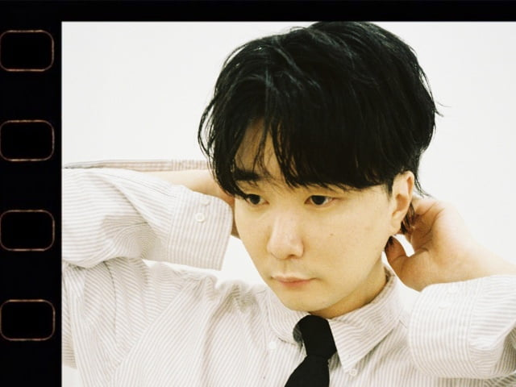

11월의 덕콘윤현상
[T Factory X FLO 덕콘]
찐덕들만 초청하여 진행하는 덕콘.
이번 기출영역은 '윤현상'입니다.
11월의 덕콘
20. 딕펑스
21. 김제형
22. 너드커넥션
23. 윤현상
T Factory x FLO 덕콘

T Factory와 FLO가 함께 만드는 팬 초청 소규모 콘서트를 소개합니다.
매월 다양한 아티스트를 선정하여 무료 콘서트를 진행합니다.
본 콘서트 신청 시 아티스트가 직접 낸 덕력고사를 풀어야하며, 덕력고사를 통과한 팬들 중 추첨을 통해 소수의 인원을 선정하여 초청합니다.
※ 본 콘서트는 코로나19 방역 수칙을 준수합니다.
윤현상 소개

SBS K-Pop 스타 출신으로,
발라드, 알앤비 음악과 서정적인 가사,
그리고 특유의 감성이 돋보이는 싱어송라이터.
{{ $t('prd.schedule-place')}}
- 일정 : 11월 26일(금) 오후 8시
- 응모기간 : 11월 15일(월) ~ 11월 21일(일)
- 당첨자 발표 : 11월 22일(월)
- 장소 : T Factory 2층, 0 Stage
{{ $t('prd.notice')}}
- * 본 공연은 덕력고사를 완료하신 분들 중 추첨을 통해 선정되며, 선정자에게만 개별 연락이 갈 예정입니다.
- * 당첨자 중 무단 노쇼하시는 경우, 추후 콘서트 당첨에서 제외됩니다.
- * 정부의 방역지침 변경이 있을 시 공연의 주요내용도 변경이 있을 수 있습니다.